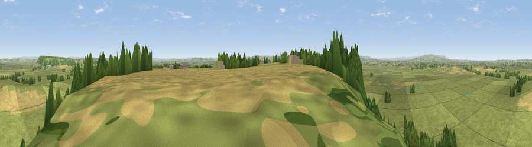

Viewpoint near Curry Rivel
#12518 in England · top 33% of its area beats it · near Curry Rivel · path 61 mWhere it is
The exact computed spot (ST 38375 26275). Click the marker for map links.
Public access: the nearest public right of way is about 61 m away — the final stretch may cross private land. Computed from Natural England's CRoW access layer and OpenStreetMap rights of way — not the legal definitive map. Always verify locally.
The view, rendered

A 360° render of this exact spot computed from the terrain model, tree cover and land cover — summer colours, afternoon light, calibrated against photographs of famous viewpoints. Real trees, hedges and buildings will differ in detail.
The panorama
Grey silhouette: terrain skyline in each direction (720 bearings, Earth curvature and refraction included). Dashed green: skyline with trees (+15 m) and buildings (+8 m) as obstacles. Blue strip: how far the ground is visible on each bearing.
Where the view opens
Wedge length = distance to the farthest visible ground on that bearing (vegetation-aware). Rings at 10, 25 and 50 km.
What fills the view
79% grassland · 10% cropland · 9% woodland · 1% built-up
Angular shares of the visible panorama (visual magnitude), not map area. Landscape diversity 0.31 (0–1 Shannon).
Key numbers
More beautiful places nearby
The staircase of upgrades: each row has a higher view potential than everything closer. Driving times are estimates from straight-line distance, calibrated against real road routing — check an actual route before setting out.
| Place | Direction | Drive | Score |
|---|---|---|---|
| Viewpoint near Fivehead | SW · 2 km | ~6 min | 61.0 |
| Viewpoint near Fivehead | SW · 3 km | ~7 min | 63.2 |
| Viewpoint near Fivehead | SW · 4 km | ~9 min | 63.7 |
| Viewpoint near Aller | NNE · 5 km | ~11 min | 64.2 |
| Viewpoint near Curry Mallet | WSW · 6 km | ~13 min | 68.0 |
| Socombe Hill | N · 12 km | ~22 min | 76.4 |
| Viewpoint near Buckland St. Mary | SW · 15 km | ~27 min | 77.3 |
| Viewpoint near Hewish | S · 16 km | ~29 min | 78.5 |
51.03252, -2.88020 · source: screening · position refined by local search. Computed location — check access rights before visiting.